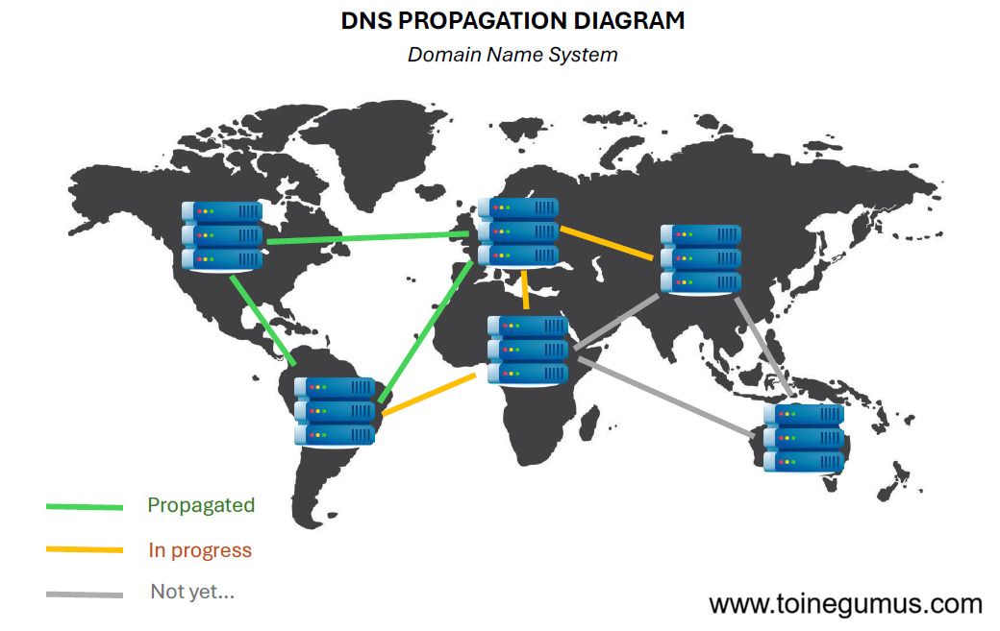

In my previous article on the anatomy of a web request, we saw how DNS transforms a domain name into an IP address. But how does this process actually work? And what other information can DNS handle? Let's check it all out.
The DNS Resolution Process
When you type a domain name into your browser, a series of steps is triggered to find the corresponding IP address. This is called DNS resolution.

This process follows a strict hierarchy, here it is in case the diagram isn't enough:
1. The DNS Resolver: Usually provided by your ISP. It queries other servers on your behalf.
2. The Root Server: It doesn't know the final IP address but knows which server manages the requested extension (like .com or .fr).
3. The TLD (Top-Level Domain) Server: It manages the extension and redirects to the server that has authority over the specific domain (e.g., infomaniak.com).
4. The Authoritative Server: This is the final server holding the official record (the DNS zone) with all the specific domain entries. It returns the answer to the resolver, which sends it to your computer.
But heads up, this distributed database is much more than a simple "phonebook", because it is capable of managing many other types of information through DNS records.
A & AAAA Records, the Basics
These are the most common records. They provide the direct link between a name and an IP address.
The A Record is used for standard IPv4 addresses (e.g., 185.125.25.1), while the AAAA Record is designed for IPv6 addresses, which are much longer (128 bits, compared to 32 bits for IPv4, 2^128 is quite a lot).

Without them, you would have to remember IP addresses for every website.
CNAME, the Alias
The Canonical Name (CNAME) allows you to create an alias from one domain to another. Instead of pointing to an IP, it points to another domain name.
This is very useful for managing domains like www.toinegumus.com which points to togumus.github.io.

MX, Mail Direction
The Mail Exchanger (MX) record indicates which server is responsible for receiving emails for your domain. It is a key piece of the SMTP protocol.
It has a unique feature: priority. You can define multiple MX servers; the system will first attempt to deliver the message to the server with the lowest priority value.

TXT, the Multi-tool
As the name suggests, it contains plain text. It is used for a variety of security and verification functions, especially for securing your emails! A primary use case is Ownership Verification, which proves to services like Infomaniak or Proton that you actually own the domain. It is also used to configure SPF, DKIM, and DMARC, which are essential protocols for preventing email spoofing.

TTL, the Secret of Propagation
The Time To Live (TTL) is not a record, but a value associated with every DNS data point. It tells resolvers how long (in seconds) they can keep the information in cache before needing to request an update.
This is why a server change can take several hours to be visible worldwide: this is what we call DNS propagation. (Come on, another little diagram, they took me some time but they look nice, don't they? ;) )

Case Study, Analyzing a Real Configuration
Here is a concrete example of a DNS management interface (Cloudflare). We can see several concepts mentioned above:

Instead of an A record, The Tunnel establishes a secure connection to expose a service without opening ports on my router (well, my "internet box", thanks Free). You can also see MX Priorities in action, where multiple mail servers with different priorities (10, 15, 20) are set up to ensure reliable message delivery (PS: the Proxy Status showing as "Proxied" indicates that traffic flows through Cloudflare's network for added security).
Another interesting example (this site's domain!):

This configuration uses Multiple A Records, meaning there are four IPs for the same domain. This setup allows for "Round Robin" (simple load balancing) and provides redundancy if one of GitHub's servers goes down. Additionally, we can see the CNAME for www. In fact, www.toinegumus.com does not have its own IP address in the DNS zone. Instead, the CNAME record states that www points to togumus.github.io, and DNS then resolves togumus.github.io to the actual GitHub Pages infrastructure. So "alias" is exactly the right concept for a CNAME record!
And here is what you get when querying the same data from a terminal using the dig command:

We can see the exact same four IP addresses configured in the Cloudflare panel. DNS in action!
Glossary
DNS Zone: A portion of the DNS namespace managed by a specific entity.
Propagation: The time required for DNS changes to be distributed across all servers worldwide.
Resolver: The server that queries the DNS hierarchy to provide you with the final answer.